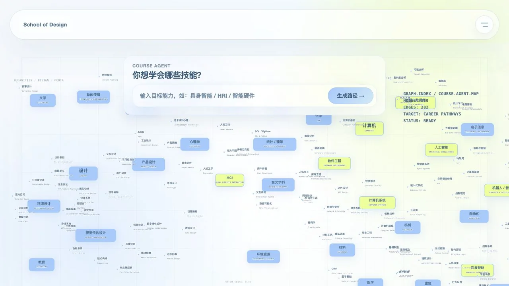
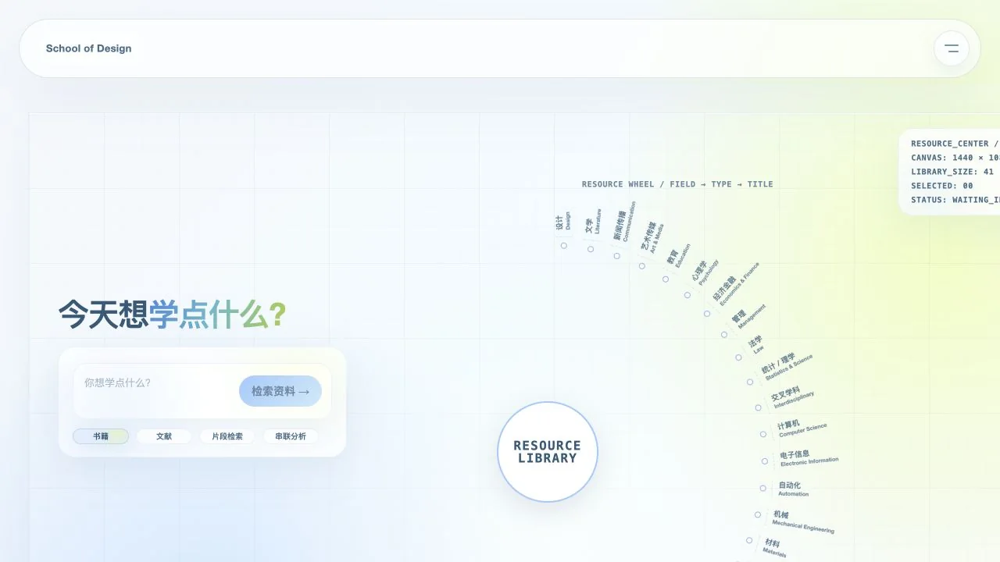
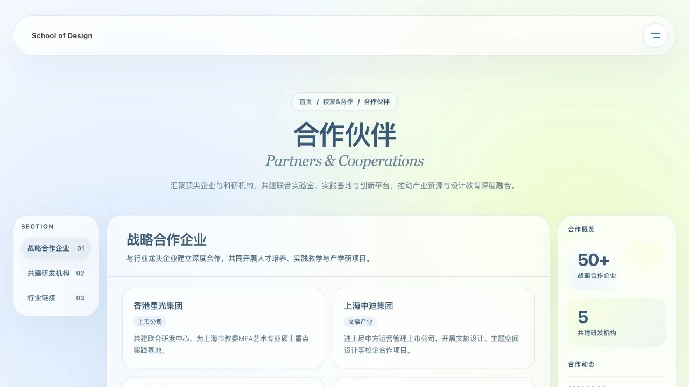
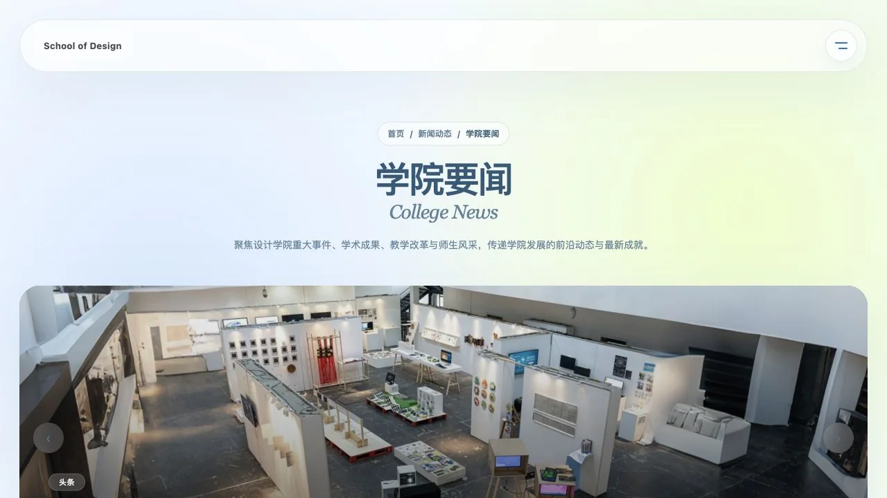

方向目标难以落到课程
学生知道自己关注产品、HMI 或具身智能，却难以判断需要建立哪些能力，以及应该先学什么。
02 / Digital content platform
面向初入校园、尚未形成学习路径的设计类学生，将职业方向、课程关系、跨学科连接与阅读资料组织为可探索的学习导航平台。
Product framing
新生需要决定课程、能力与阅读方向，却缺少连接职业目标、课程先后关系、跨学科机会和资料来源的认知框架。平台从学生想从事的方向出发，生成课程路径并标出桥接学科，再把路径映射为可检索、可收藏的阅读清单。
学生知道自己关注产品、HMI 或具身智能，却难以判断需要建立哪些能力，以及应该先学什么。
单个课程介绍无法呈现先修关系、能力递进和跨学科桥接，选课容易停留在局部判断。
书籍、论文和课程资料分散在不同入口，学生难以判断当前阶段该读什么、资料如何继续串联。
Learning journey
学生先输入希望从事的方向，系统据此组织能力结构与课程顺序，并标出可与当前专业形成连接的学科节点。课程路径随后成为资料检索条件，帮助学生建立连续的学习计划。
产品设计、HMI、具身智能等目标
明确目标岗位需要建立的能力
生成先修关系与阶段顺序
识别设计与计算、工程等连接点
匹配书籍、文献与学习资料
Product system
课程地图负责把方向目标展开为能力、课程和学科连接；资料检索承接课程路径，继续推荐与当前目标相关的书籍、文献和内容片段。以下界面均来自实际完成的网站。
学生输入希望从事的方向，课程地图生成能力结构、课程顺序与桥接课程。可缩放的关系图同时呈现设计与计算、工程、人因等学科的交叉节点，帮助学生看清路径选择产生的影响。

资料中心延续课程地图中的方向目标，支持按书籍、文献、内容片段和串联分析检索。推荐结果可加入书架，使学生知道当前阶段适合阅读什么，并保留后续学习线索。

合作信息和学院动态沿用统一导航与内容字段，保证核心学习服务之外的页面仍具备一致的浏览和维护方式。


Interaction film
演示覆盖方向输入、课程关系浏览、跨学科节点查看和资料检索，重点检查地图拖拽、筛选切换、导航展开与跨端页面变化的反馈。